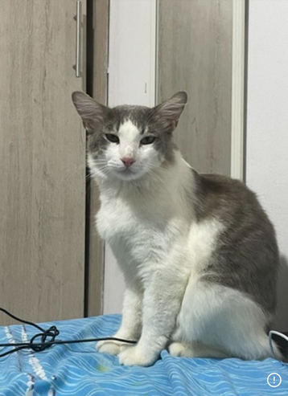
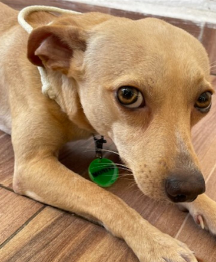
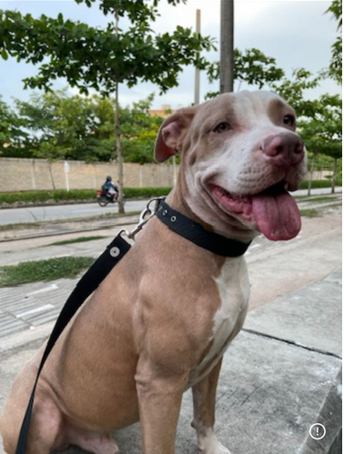

Taciturno
Croquetas Miringo 2 veces en el dia, 125gramos (Mañana/noche).
2 veces trimestralmente, no le gusta el agua y es agresivo.
Cuando el decida, a cualquier hora del dia. DISPONIBLE
Cepillado semanal con cerdas finas y requiere silencio en cualquier lugar.

El vivaracho
Concentrado Rochu con alimento húmedo dog chow 3 veces al dia 125gm y meriendas que encuentre en el camino.
2 veces al mes, pero es opcional.
Siempre que este con Raiko, puede durar todo el tiempo hasta darse por vencido.
Revisión dental semanal, galletas especiales para el aliento 20gm diarios.

Guardian Guerrero
3 comidas al día concentrado Dogourmet con carne, pollo, higado 467gm.
Cada 3 semanas con shampoo especial, tiene delicado el pelaje.
Juega todo el dia con juguetes y coge a Monito como uno.
Revisión de oidos cada 7 dias.